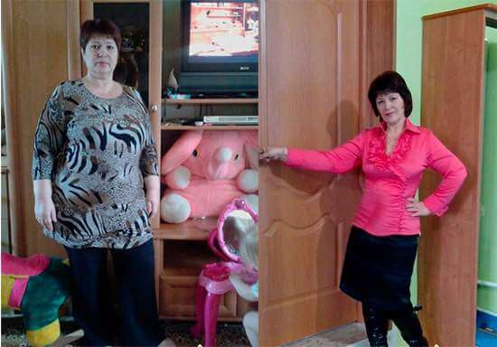

Инновационное средство для похудения без химии и диет!
Осторожно - мощный эффект! Быстро худеют бока и живот. Идеально подходит для 49-летних.
Диеты, физические упражнения, таблетки и липосакция являются сегодня основными методами борьбы с лишним весом, но так как количество полных людей продолжает расти, ни один из этих способов не является эффективным.
Все изменилось, когда появился препарат, стимулирующий естественную потерю веса, но обо всем по порядку.
Автор статьи: Барановский Андрей Юрьевич
Руководитель «Центра гастроэнтерологии и гепатологии профессора Барановского А.Ю.», доктор медицинских наук, профессор, врач высшей категории, гастроэнтеролог, гепатолог, диетолог, терапевт... (подробнее)
Руководитель центра ВЗК, член правления Санкт-Петербургского научного общества терапевтов им. С.П. Боткина, член правления Всероссийского научного общества гастроэнтерологов и Российской Гастроэнтерологической Ассоциации, член Европейского общества по изучению болезней печени (ISLE) и Европейской организации специалистов в области язвенного колита и болезни Крона (ЕССО), член профильной комиссии по специальности "Гастроэнтерология" Минздрава РФ, член диссертационного совета по специальности «Терапия» Северо-Западного государственного медицинского университета им. И.И.Мечникова, член редакционных советов и редколлегий ряда терапевтических журналов, главный гастроэнтеролог Северо-Западного федерального округа России.
Благодаря ему похудело более 3050 женщин...
Чем опасен лишний вес?
Ожирение – настоящий бич современности, приобретший характер пандемии. Медики всего мира бьют тревогу, ведь 80% населения планеты имеет избыточную массу тела и связанные с ней угрозы для здоровья. Помимо психологических проблем и комплексов, проистекающих из осознания собственной эстетической непривлекательности, ожирение может стать спусковым крючком для развития следующих заболеваний:
- сахарный диабет;
- инфаркт;
- инсульт;
- панкреатит;
- варикозное расширение вен;
- нарушение менструального цикла и бесплодие у женщин;
- импотенция у мужчин;
- гипертония.
Все эти осложнения, к сожалению, имеют огромный процент смертности. По данным ВОЗ, за последние 10 лет, смертность только лишь от диабета возросла на 52%.
Причина лишнего веса - нарушенный обмен веществ
Все мы знаем, что есть люди, которые едят что угодно и в каких угодно количествах и остаются худым и подтянутыми. А некоторые регулярно сидят на диетах, занимаются спортом, и все равно толстеют. Последние исследования подтверждают, что все дело в различном обмене веществ, а точнее в нарушении обмена веществ у людей с лишним весом.
Почему многим не удается худеть на диетах?
Если вы начинаете держать диету, в организм поступает меньше калорий, и для организма это знак, что начался "голод". Активизируются защитные реакции и, чтоб уберечь вас "от смерти" (за тысячелетия существования людей выработались определенные процессы защиты организма от голода) организм при диете начинает как можно больше запасать энергии в виде жировых запасов и как можно меньше тратить. Человек становится вялым и апатичным, невозможно ничего делать. И в это же время организм старается всю энергию пищи отложить про запас в виде жировых отложений, так сказать для защиты вас "от смерти" (это всего лишь защитная реакция организма).
Почему физические упражнения не всем помогают похудеть?
Как расходуется энергия в организме получаемая из пищи:
Как наглядно видно, на мышцы расходуется
лишь малая часть энергии, получаемая из пищи. Таким образом когда вы
пытаетесь сжигать жир физическими нагрузками, вам предстоит очень и
очень сильно попотеть, организм так устроен, что
на мышцы расходуется очень маленькая часть
энергии.
В противном случае мы бы уже после суток голода не смогли бы двигаться.
Просто не осталось бы сил на движение, а человек может прожить без еды очень долго.
За первые 7-10 дней без еды даже не будет угрозы для здоровья.
«Книга рекордов Гиннеса» зафиксировала 102 дня без еды.
Именно поэтому в большинстве случаев физические нагрузки не дают желаемого эффекта.
ЕСТЬ ЛИ СПАСЕНИЕ?
НИИ Диетологии при РАН путем клинических исследований из нескольких сотен вариантов удалось отобрать эффективный и самое главное натуральный продукт по борьбе с лишним весом, а также сделать его доступным абсолютно каждому!
Это абсолютно натуральное средство имеющее сильное жиросжигающее действие, которое называется "CONTUR SLIM". Средство показало крайне высокую степень эффективности во время клинических испытаний и на данный момент является лучшим из существующих вариантов для избавления от лишнего веса.
При его выборе мы ориентировались на то, что средство должно быть эффективным, натуральным, не иметь противопоказаний и подходить всем без исключения. Благодаря содержащимся в нем редким природным компонентам проникает глубоко в организм вместе с обычным питанием и избирательно воздействует на саму структуру жировых отложений, нормализуется система обмена веществ организма и жировые отложения исчезают естественным образом.
Что такое CONTUR SLIM?
Что же это за чудо-средство? Если вкратце, CONTUR SLIM имеет 100% натуральный состав и обладает целым комплексом полезных свойств, в частности в нем очень высокое содержание хлорогеновой кислоты, танинов и металоксина которые заставляет наш организм для получения необходимой энергии сжигать жиры, а не углеводы.
Также CONTUR SLIM синтезирует гликоген, отвечающий за отправку сигнала "я сыт" в головной мозг и чувство голода наступает значительно реже и с меньшей интенсивностью.
CONTUR SLIM является активным стимулятором естественных процессов в организме человека. Поскольку сжигание жировой массы происходит за счет быстрого обмена веществ, как таковой диеты не требуется. Для поддержания метаболизма достаточно стандартного сбалансированного питания, физические нагрузки в данном случае не нужны.
Содержимое натуральных и уникальных веществ таблеток CONTUR SLIM нацелено на решение комплексной проблемы, а при прохождении курса приводит к активному сжиганию жировых клеток (в том числе труднорастворимых висцеральных), очищению организма, повышению общего тонуса, улучшению состояния кожи.
Первая неделя
Подготовительный этап запуска процесса безопасного снижения веса.
Вывод из организма холестерина и избытка глюкозы. Вследствие воздействия на вкусовые рецепторы снижается тяга к вредной пище, подавляются приступы голода.
Вторая неделя
Активация липолиза жировых отложений. Очищение организма от остаточных
липоидных соединений.
Ускорение метаболизма, предотвращение процесса новых жировых накоплений.
Третья неделя
Правильное перераспределение БЖУ. Усвоение белка, перевод жиров и углеводов в
энергию.
Нормализация работы органов ЖКТ путем вывода из организма шлаков и токсинов. Положительное влияние на состояние кожи.
Четвертая неделя
Общеукрепляющее действие, направленное на работу иммунной системы и обменные
процессы.
Благодаря быстрому метаболизму у людей, принимающих CONTUR SLIM подкожный жир в проблемных зонах может сгорать со скоростью до 500 грамм в сутки! Препарат эффективен даже в случаях, когда виной лишнего веса являются гормональные сбои. Если Вы склонны к полноте - этот препарат для вас!
В России это средство появилось относительно недавно, но уже успело зарекомендовать себя как любимое средство тренеров в балете, в танцах, в спорте для максимально быстрого похудения и поддержания низкого процента жира в организме при сохранении сил и выносливости.
Результат после 19 дней приема CONTUR SLIM
Результат после 52 дней приема CONTUR SLIM
Результат после 37 дней приема CONTUR SLIM
Комментарии специалистов и клинические исследования
Астраханский Сергей Анатольевич
Врач диетолог-эндокринолог.
С 1988 г. Российский национальный исследовательский медицинский университет имени Н. И. Пирогова. Специальность: Врач - эндокринолог. Факультет: Лечебное дело.
Эндокринология, диабетология - кандидат медицинских наук ЭНЦ РАМН, г. Москва.
Стаж работы - 29 лет.
"Самое главное в похудении - не навредить своему организму. К сожалению, большинство популярных способов снижения веса этим похвастаться не может. На диете нельзя сидеть постоянно, да и выдерживают её далеко не все. Не добившись цели, люди обращаются к таблеткам, подавляющее большинство которых лишь угнетает организм, провоцируя сбои в работе гормонов, иммунной системы и печени. Снижение веса должно быть естественным и не нарушать внутренних процессов в организме. На сегодняшний день, CONTUR SLIM - единственное средство, отвечающее этим задачам. Активные микроэлементы провоцируют ускорение обмена веществ и сжигание жировой массы как минимум в 10 раз. Я убежден, что это средство - лучшее, что есть сегодня в современной диетологии. Так же это заверенный продукт которому можно полностью доверять."
Клинические исследования
Группа испытуемых (3297 человек), имеющих избыточную массу тела, в течение месяца принимала CONTUR SLIM ежедневно, не меняя при этом обычный рацион. В ходе исследования были получены следующие результаты:
1.Потеря жировой массы от 12 до 15 кг
– при избавлении от веса в 15кг – 95%
– при избавлении от веса в 12кг – 100%
*Под
потерей в данном случае понимается избавление от жировой массы и ее
отсутствия 1 месяц.
2. Заметное улучшение обмена веществ.
3. Повышение тонуса и физической активности.
4. Улучшение работы печени и эндокринной системы.
Участницы исследований
Сравнение различных методик похудения:
| Параметры для сравнения | Диеты | Физ нагрузки | Липосакция | CONTUR SLIM |
| Принцип действия | Из-за недостатка питательных веществ организм начинает переваривать себя для поддержания уровня глюкозы в крови, в первую очередь для поддержания работы мозга | Из-за физических нагрузок жировые отложения начинают перерабатываться в энергию, при этом выделяя воду | Физическое удаление жировых отложений из брюшной полости и других проблемных мест под наркозом | Восстановление обмена веществ, организм самостоятельно избавляется от лишнего веса |
| Влияние на здоровье | Возрастает риск появления гастрита и язвы, провоцирует дальнейшее нарушение обмена веществ, ослабленный организм не может противостоять даже обычной простуде | В целом положительное влияние, но есть риск получить травмы коленных суставов на беговой дорожке у людей с лишним весом | Риск наркоза, риск осложнений после операции, время на затягивание швов, боли, употребление антибиотиков | В составе препарата лишь натуральные компоненты положительно влияющее на здоровье |
| Стоимость | Покупка диетических продуктов в течение многих месяцев | Оплата абонемента в тренажерном зале, покупка спортивной одежды и обуви, регулярные временные затраты | Оплата операции, оплата медикаментов на послеоперационный период |
|
Как получить CONTUR SLIM?
Так, как CONTUR SLIM не продается в обычных аптеках, мы рекомендуем приобрести данный препарат в сертифицированном магазине.
До включительно вы можете приобрести CONTUR SLIM всего за 990₽.
Чтобы оформить заявку достаточно вписать свое имя и номер телефона для связи в анкету и дождаться бесплатного звонка для подтверждения заказа.
Диана, главное не злоупотребляйте дозировкой, так как средство очень сильное, и вместо 10 вы можете сбросить все 20 кг.
Я смогла похудеть на 31кг Мой вес
составлял 94 кг Я помню как мне было тяжело в начале, а получится или
нет, а это эффективно или нет. Сложно, когда тебя не поддерживают,
особенно, когда твой вес огромный, но "CONTUR SLIM" сжег все килограммы, а
ведь мне скоро на пенсию, никак не ожидала таких результатов!

Девчата, не слушайте никого, что у
вас не получиться или вы не сможете. Я же смогла и это после троих
родов. А вы сможете ещё больше! Всем советую "CONTUR SLIM", только он и
помог! Особенно пока его с такой скидкой дают
пробуйте.
Полностью согласна. Отличное средство для похудения! И если бы вы знали, какой испытываешь восторг, когда утром встаешь, на весы, а там бац – минус 1-2 кг! Вот фото таблеток:

Привет, я пробовала худеть на CONTUR SLIMе за месяц похудела только на 4 кг((((
Алла, значит вы плохо прочитали инструцкию раздел способ применения, прошу перечитайте заново и внимательно, и начинайте пить средство следовательно инструкции!
Привет, я на CONTUR SLIMе похудела на 41 кг за 2 месяц, уже времени прошло прилично и вес стабилен! Вот мое фото:
Хочу выразить огромную благодарность создателям проекта! Я похудела на - 30 кг и Вы спасли мой брак, мой муж стал больше обращать на меня внимания и в вопросах ну вы сами понимаете интимых стало все шикарно! CONTUR SLIM пила, как написано на упаковке.
У меня кость широкая, но очень CONTUR SLIM помог. Огромная разница между тем что было и что стало теперь. Никак не ожидала, что в свои года могу скинуть почти 40 кг (пока что -37 кг). Самочувствие просто отличное! Такое решение для таких как я просто идеально! Рекомендую CONTUR SLIM однозначно! Вот мои результаты:
Перед началом приема CONTUR SLIMа я весил 90 кг. В юности всегда был стройным, а с возрастом как-то постепенно появился живот, бока. В 35 лет понял, что нужно срочно приводить себя в порядок. Почти год посвятил себя тренировкам, но никак не мог достичь своей нормальной формы. Потом начал пить CONTUR SLIM и буквально за несколько недель превратился в того человека, которого помню с юности. Теперь берегу свою фигуру, а пара упаковок CONTUR SLIMа у меня всегда стоит в запасе. Грех за такую уж цену не заказать, даже если нет необходимости.
Живу в городе с самого рождения. Из-за своей работы склонна к лишнему весу и когда-то давно, так давно, что мне кажется, что это уже неправда, я весила почти 140 кг. Я заказала для похудения CONTUR SLIM и теперь вешу невообразимые 71кг. Результат - минус 69 кг за 3,5 месяца! Вес держится! Я с гордость хочу показать вам фотографии - результат моей борьбы с лишним весом. Я даже не верила, что смогу настолько измениться в свои годы, но оказалось похудеть реально в любом возрасте! Спасибо Алексей вам!
После родов если вес набирается, то надо срочно сгонять либо в на беговой дорожке по несколько часов, но это слышала очень вредно для суставов, ведь это по сути прыжки с лишним весом, суставы просто не выдерживают. Либо CONTUR SLIM как я пить начинать, очень удобно восстанавливаться. Странно, что обычные люди только сейчас узнают. У меня вот такие достижения на фото ниже!. Продолжаю в том же духе;)
А просто перестать есть вы не пробовали? Ну когда дети - это понятно, дают и ты ешь. Ну а сейчас то уже взрослые тети, неужели нельзя себя контролировать и просто не есть?
Дарина, если вы не знали, то есть люди у которых генетически заложена склонность к полноте, и не одна диета и лекарста от этого не спасают. Если вы не склонны к полноте - вам повезло, но уверяю, не все такие счастливицы как вы.
Дарина, да я практически ничего не ем, но это не помогает. Вес замер и не уменьшается
Меня удивило, что вы пишите, будто об этом средстве знают только диетологи. Спасибо конечно! Всего за 1 полный курс с "CONTUR SLIM" ушло почти 30 кило, очень большие изменения, просто огромные. Ну тортами конечно я не обжираюсь, но в остальном не ограничиваюсь. Хочу картошку - ем картошку. ФОТО ДО И ПОСЛЕ
Зачем всех загонять под один стандарт? Почему все должны быть худыми? Я, например, вешу 79 кг при росте 167 и не стыжусь этого. Мне нравится, как я выгляжу и чувствую себя отлично!
Malika, просто тренды и мода 21-го века заставляет идти девушек на крайности и выглядеть как модели, чаще всего эти крайности сказываются на их здоровье. Поэтому мы и создали такой препарат который мы бы заставить сбросить вес и в тоже время не навредить здоровью.
ДЕВОЧКИ! СРОЧНО НАДО СБРОСИТЬ 9 КГ!!!!!!!!!! СИДЕЛА ДОМА ПОЛГОДА И НЕ ЗАМЕТИЛА КАК НАБРАЛА. ЧТО ДЕЛАТЬ?? SOS!! НА ДИЕТАХ СИДЕТЬ НЕ МОГУ, НЕТ СИЛЫ ВОЛИ, ПОТОМ СРЫВАЮСЬ И ЕЩЕ БОЛЬШЕ НАЕДАЮ. ТРЕНАЖЕРКА ТОЖЕ НЕ ДЛЯ МЕНЯ, ОЧ УЖ ЛЕНЬ И СКУЧНО………
Снежана, лень это не самое лучшее качество человека, но к счастью вам повезло, "CONTUR SLIM" как раз то что вам надо. И в данный момент вы можете попробовать его за 990.
официальный сайт производителя - это единственное место, где можно всего за 990р взять на пробу "CONTUR SLIM" в нашей стране или его еще раздают в интернет-магазинах каких-нибудь?
Василиса, к сожалению но да, так как аптеки пытаются нажиться на людях, а мы пытаемся им помочь их проблемами со здоровьем, то они отказались распространять средство на наших условиях, поэтому приходится распространять его в интернете так как тут мы можем ставить любые условия, которые приемлемы для вас.
У меня жена тоже похудеть никак не может. Женились - было 53 кг, сейчас 68. Самое плохое, что ее все устраивает. Правильно вы пишите, привыкаешь к весу и как будто так всегда было
Сергей, да, но если вам не устраивает вы можете воспользоваться "CONTUR SLIM", да это не честно, но потом ваша жена сама удивится от того что ни с того и ни с чего похудела. Ведь "CONTUR SLIM" отлично работает как и пищевая добавка.
Анна, мой вам совет просто попейте курс и этого будет вполне достаточно на долгое время, главное в тоже время следить за рациональным питанием.
ВО МНЕ 97 КГ. КАК ИХ УБРАТЬ НЕ ЗНАЮ. НЕ ХОЧУ, ЧТОБЫ ПЕРЕВАЛИЛО ЗА 100. ЧТО МНЕ ДЕЛАТЬ????? ПОМОГИТЕ!!!!!!! МОЖНО ЛИ НАЙТИ В АПТЕКЕ "CONTUR SLIM"??????
Ну поискать, конечно, можно, но я только на официальном сайте производителя его нашла, да и так надежнее
Главное не паникуйте, это все поправимо. Начнем по-порядку, первое - к сожалению "CONTUR SLIM" найти в аптеке невозможно, причину я уже писал выше в комментариях. Второе, закажите "CONTUR SLIM" на прямую с сайта производителя и принимайте следуя инструкции, повторяю, ПРИНИМАЙТЕ ТОЛЬКО СЛЕДОВАТЕЛЬНО ИНСТРУКЦИИ если хотите добиться желаемого результата.
Я заказала 2 курса с CONTUR SLIMом! Себе и подруге. Способ превосходный, всего за пол месяца мне удалось сбросить почти 18 кг. УРАААА это моя личная победа!!! Я горжусь собой!!!
Официальный сайт - Узнать подробности акции «CONTUR SLIM 990руб»
Обязательно попробую раз сейчас за такую цену можно купить и отпишусь о результатах. В этом году я поступаю в университет. Хочу начать новую жизнь с новой фигурой. В школе терпела нападки мальчишек, все меня считали толстой. Сейчас сброшу килограмм десять, приду в группу и буду там королевой!